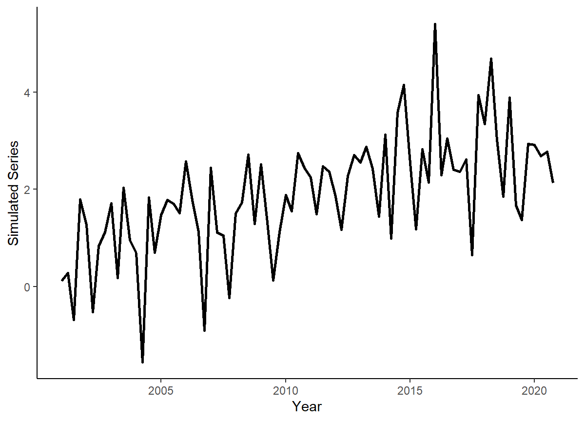
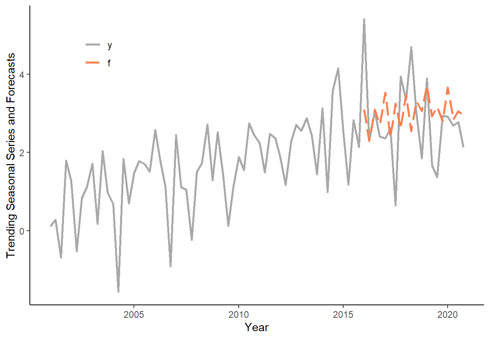

In this tutorial, we will generate trending series, we will apply an information criterion to select the most suitable trend model, and we will obtain and compare one-step-ahead forecasts using a rolling window procedure.
Let’s generate a time series that follows a quadratic trend: \(y_{t} = 10+0.01t+0.002t^2+e_{t}\), where \(e_{t} \sim N(0,16)\), for \(t=1,\ldots,180\).
n <- 180
set.seed(7)
e <- rnorm(n,0,4)
trend <- c(1:n)
y <- 10+0.01*trend+0.002*trend^2+eStore \(y\) and \(trend\) in a data.table, call it ‘dt’. Add some arbitrary dates to the data (e.g., suppose we deal with the monthly series beginning from January 2006).
dt <- data.table(y,trend)
dt$date <- seq(as.Date("2006-01-01"),by="month",along.with=y)Plot the realized time series using ggplot function.
ggplot(dt,aes(x=date,y=y))+
geom_line(size=1)+
labs(x="Year",y="Trending Series")+
theme_classic()
Calculate Akaike Information Criteria for linear, quadratic, cubic, and exponential trend models, using all observations in the series.
AIC_vec <- matrix(ncol=4,nrow=1)
for(i in 1:4){
if(i < 4){
reg <- lm(y~poly(trend,degree=i,raw=T),data=dt)
AIC_vec[i] <- log(crossprod(reg$residuals))+2*length(reg$coefficients)/n
}else{
reg <- lm(log(y)~trend,data=dt)
yhat <- reg$fitted.values
sig <- sd(reg$residuals)
ystar <- exp(yhat+sig^2/2)
res <- dt$y-ystar
AIC_vec[i] <- log(crossprod(res))+2*length(reg$coefficients)/n
}
}
AIC_vec## [,1] [,2] [,3] [,4]
## [1,] 8.879646 7.841645 7.849521 7.975999Generate a sequence of one-step-ahead forecasts from linear, quadratic, cubic, and exponential trend models, using the rolling window scheme, where the first rolling window ranges from period 1 to period 120.
dt$t1 <- NA
dt$t2 <- NA
dt$t3 <- NA
dt$te <- NA
R <- 120
P <- n-R
for(i in 1:P){
reg1 <- lm(y~trend,data=dt[i:(R-1+i)])
dt$t1[R+i] <- reg1$coef[1]+reg1$coef[2]*(R+i)
reg2 <- lm(y~poly(trend,degree=2,raw=T),data=dt[i:(R-1+i)])
dt$t2[R+i] <- reg2$coef[1]+reg2$coef[2]*(R+i)+reg2$coef[3]*((R+i)^2)
reg3 <- lm(y~poly(trend,degree=3,raw=T),data=dt[i:(R-1+i)])
dt$t3[R+i] <- reg3$coef[1]+reg3$coef[2]*(R+i)+reg3$coef[3]*((R+i)^2)+reg3$coef[4]*((R+i)^3)
rege <- lm(log(y)~trend,data=dt[i:(R-1+i)])
sig <- sd(rege$residuals)
dt$te[R+i] <- exp(rege$coef[1]+rege$coef[2]*(R+i)+sig^2/2)
}Plot the original series overlay by the one-step-ahead forecasts from the four considered trend models. Note, for convenience we will first ‘melt’ the data.table in to the ‘long’ format.
dt_long <- melt(dt[,.(date,y,linear=t1,quadratic=t2,cubic=t3,exponential=te)],id.vars="date")
ggplot(dt_long,aes(x=date,y=value,color=variable))+
geom_line(size=1,na.rm=T)+
scale_color_manual(values=c("darkgray","black","goldenrod","steelblue","indianred"))+
labs(x="Year",y="Trending Series and Forecasts")+
theme_classic()+
theme(legend.title=element_blank(),legend.position=c(.15,.85))
Calculate the RMSFE measures for each of the two forecasting methods.
dt[,`:=`(e_t1=y-t1,e_t2=y-t2,e_t3=y-t3,e_te=y-te)]
rmsfe_t1 <- sqrt(mean(dt$e_t1^2,na.rm=T))
rmsfe_t2 <- sqrt(mean(dt$e_t2^2,na.rm=T))
rmsfe_t3 <- sqrt(mean(dt$e_t3^2,na.rm=T))
rmsfe_te <- sqrt(mean(dt$e_te^2,na.rm=T))
rmsfe_t1## [1] 6.151904rmsfe_t2## [1] 3.796861rmsfe_t3## [1] 3.906023rmsfe_te## [1] 5.132312Page built: 2022-08-20 using R version 4.1.2 (2021-11-01)